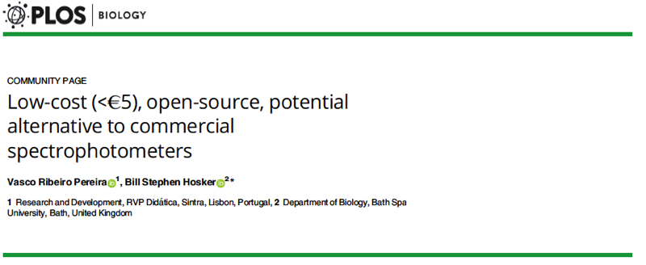
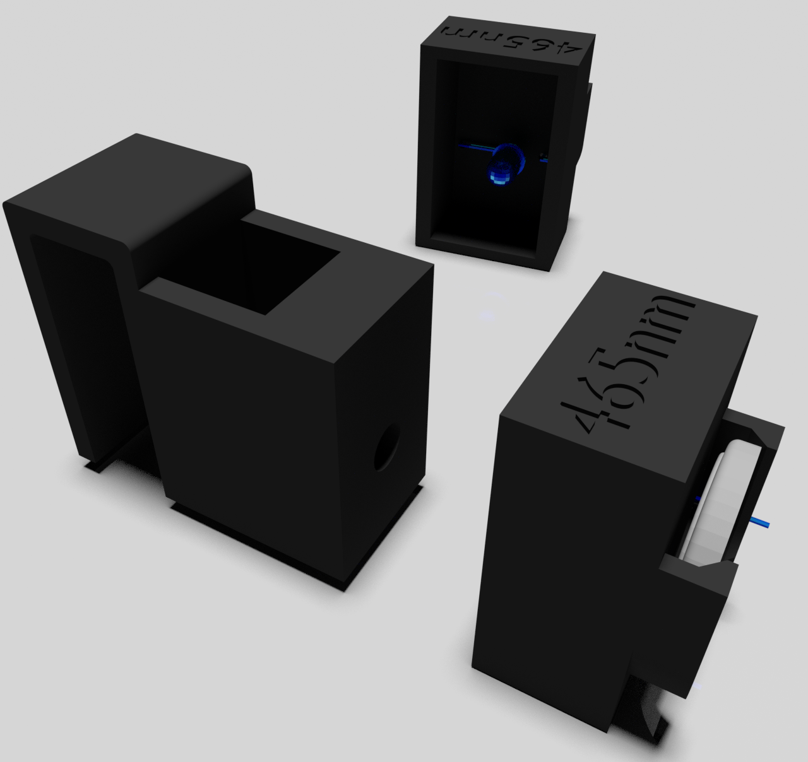

Um Espectrofotómetro ao alcance de todos
Os espectrofotómetros desenvolvidos pela RVP Didática têm uma conceção simples mas poderosa nas capacidades de demonstrar os conceitos teóricos e práticos por trás da espectroscopia de radiação visível.
A criação do espectrofotómetro RVP, a um preço acessível, que utiliza tecnologia pré-existente para a sua construção e utilização, é descrita no nosso artigo:
Low-cost (<€5), open-source, potential alternative to commercial spectrophotometers

O Espectrofotómetro
Os espectrofotómetros são equipamentos que nos permitem identificar e quantificar substâncias que absorvem radiação eletromagnética a um dado comprimento de onda.
O nosso espectrofotómetro é constituído por uma fonte de radiação - LED, um suporte para a amostra em análise e um sensor - um smartphone!
Um espectrofotómetro é geralmente dispendioso e de grandes dimensões, tornando-se uma técnica que raramente é levada para fora de um laboratório.
Com a nossa solução pode aprender/ensinar espectroscopia praticamente em qualquer lugar, assim como efetuar alguns ensaios!
O que levamos até si
Dinamizamos aulas de espectroscopia para turmas até 26 alunos, em grupos de 2 durante aproximadamente 90 minutos.
O que será necessário:
- Smartphone com Sci Journal da Google instalado
- Sala equipada com projetor
- 2,50 € por participante
- Em laboratório - Possibilidade de dinamizar uma análise com condições a combinar com o professor previamente.
